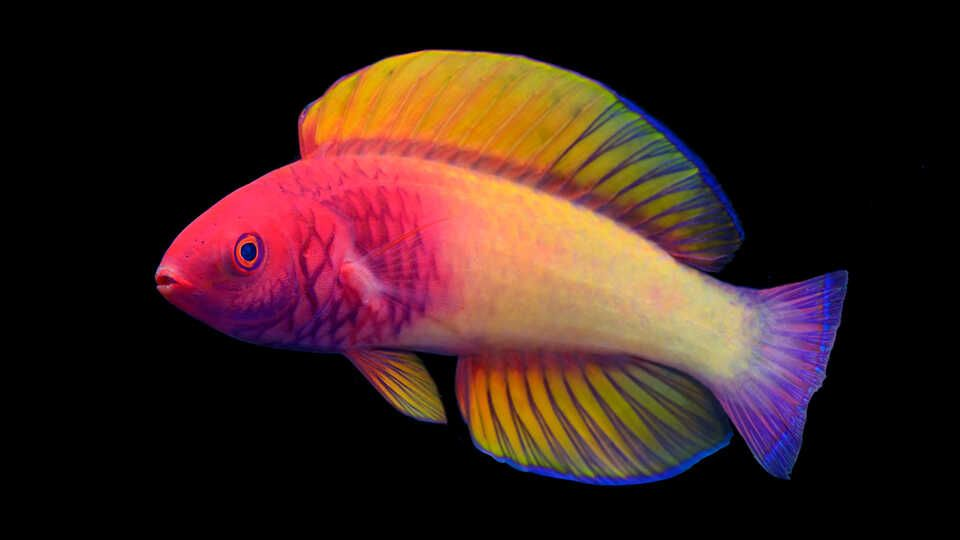

DISCOVERED
Scientists discover beautiful new rainbow-colored fish
Researchers have described a stunning multicolored wrasse in the Maldives as a newfound species, after the fish spent decades being misidentified as a closely related species. The rainbow-colored fish lives among unusually deep coral reefs known as "twilight reefs."[…]